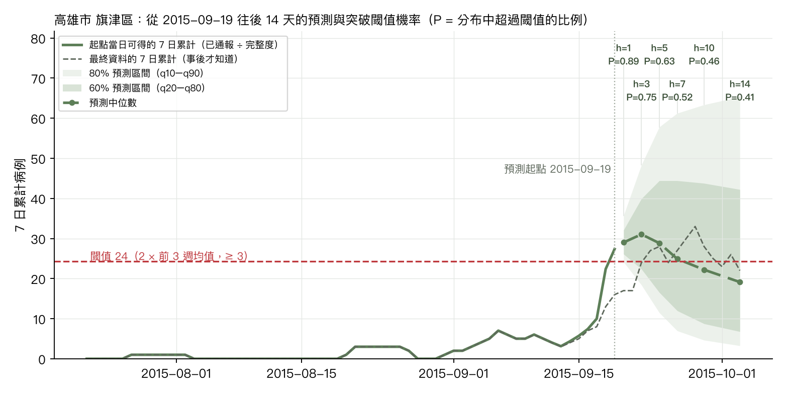
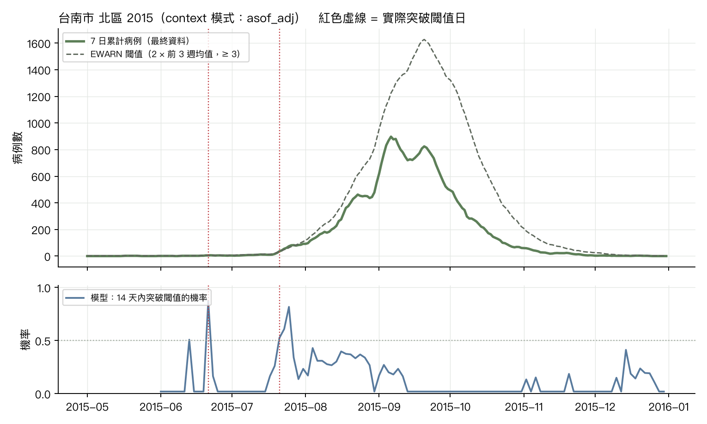
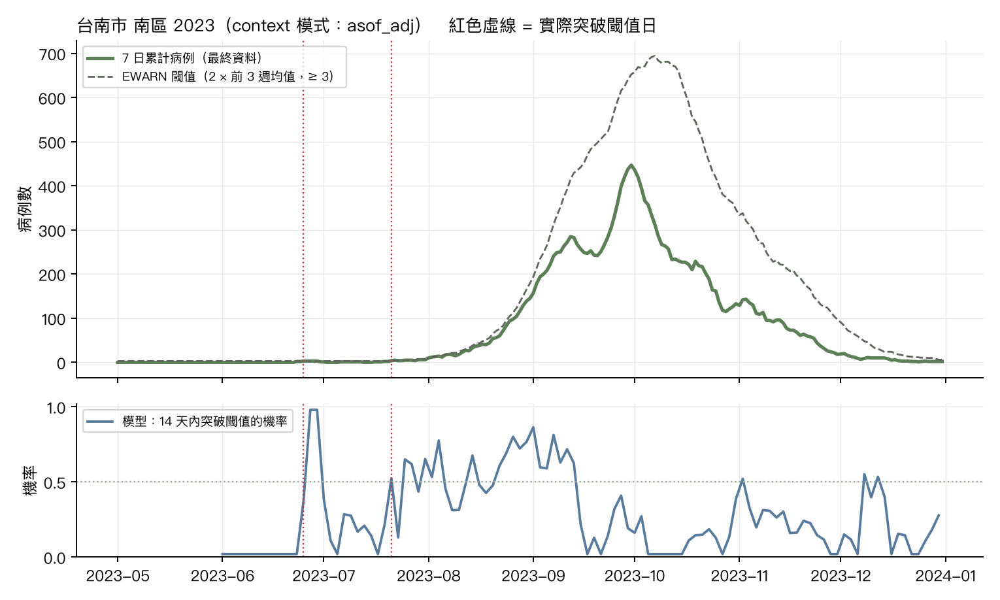

Validation report · 2026-10-02
登革熱鄉鎮層級預測式預警：TimesFM 3.0 在承平期資料上的驗證
對應 CHG 情境一（複合災難下收容所自報的離線早期警示）第一至二年的驗證工作：以疾管署登革熱每日確定病例，模擬「小區域、每日、低計數」的症候群序列，檢驗時序基礎模型能否在 WHO EWARN 靜態閾值被突破之前數天、帶著不確定區間發出預警。本頁說明資料、方法、模型輸出的讀法、驗證結果與應用情境。
資料：疾管署登革熱每日確定病例（本土，居住鄉鎮），全台 22 縣市 274 個鄉鎮（含台南 + 高雄 74 區）回測年份：2010、2011、2012、2013、2014、2015、2016、2018、2019、2020、2023、2024 年 6–12 月，每 2 天一個起點（每年 107 個）模型：TimesFM 3.0（零樣本，未微調）
突破閾值的預警能力（AUC）
0.89
只用當日已通報資料 + 已通報 ÷ 完整度；naive 0.77、無校正 0.86（第二輪台南高雄回測）
前置時間中位數（p* = 0.5）
4天
EWARN 靜態規則 0 天、CUSUM 0 天、EWMA 2 天
假警報（p* = 0.5）
0.6/100 鄉鎮週
敏感度 0.34；EWMA 0.21、CUSUM 0.67
7 日累計 WIS vs naive（流行年，h = 7）
−19%
無通報延遲時 −22%；季節性 naive 對登革熱無用
01
要回答的問題
From scenario to testable question
情境一的要求
- 收容所層級、每日、低計數且零膨脹的症候群序列，離線可用。
- 不只判定「現在是否超標」，而是前瞻 N 天、帶不確定區間地預測「是否即將突破流行閾值」。
- 比 WHO EWARN 的靜態規則（達前 3 週均值兩倍）更早，且假警報可控；校準衰退時要能降級。
承平期的替代驗證
- 以「鄉鎮 × 日」的登革熱本土確定病例模擬「收容所 × 日」，涵蓋 6 個流行年（2010、2011、2012、2014、2015、2023；該年本土病例 ≥ 1,000）與 6 個平靜年（2013、2016、2018、2019、2020、2024）。
- 目標 = 7 日累計病例；閾值 = max(2 × 前 3 週週均值, 3 例)。事件 = 未來 14 天內 7 日累計 ≥ 以最終資料計算的起點閾值（兩種 context 模式共用同一組事件）；警示機率則用各模式當日可得資料算出的閾值。
- 誠實回測：用通報日重建每個起點「當日可得」的資料，並比較有無通報完整度校正。
02
資料與方法
Data & method
| 資料 | 疾管署「登革熱 1998 年起每日確定病例統計」個案檔（發病日、通報日、居住鄉鎮、本土/境外）。公開平台已於 2026 年 3 月下架，使用 Internet Archive 保存的官方檔案（發病日至 2025-07-23）。 |
| 面板 | 全台 22 縣市 274 個鄉鎮（含台南 + 高雄 74 區）（2008 年起有本土病例者）× 日（2008-01-01 至 2025-07-23）；同時建立「發病日 × 通報延遲」直方圖，通報延遲中位數 2 天、第 95 百分位 7 天，起點當日最近 7 天平均約 73% 已通報。 |
| 兩種 context 模式 | final：用最終資料（無延遲，樂觀上限）；asof_adj：as-of 除以歷史通報完整度（下限 0.2），第二、三版的主要模式。asof（只用已通報、不校正）在第二輪台南高雄回測已證明不可用，本輪未跑。 |
| 模型 | TimesFM 3.0 零樣本，單變量批次，context 2 年，horizon 1–14 天，輸出 9 個分位數；基準 last-value naive、季節性 naive（364 天）；偵測器 EWARN 靜態規則、EWMA、CUSUM。 |
| 評估 | 分布：WIS（近似 CRPS）、80% 涵蓋率。警示：事件 vs 機率的 AUC；p* 掃描下的敏感度、每 100 鄉鎮週假警報、PPV（鄉鎮週層級）；前置時間 = 事件前 14 天內最早警示到突破日的天數；配對比較 = 在不高於偵測器假警報率的 p* 下比較。 |
03
模型輸出是什麼、怎麼讀
How to read the output
一個起點的完整輸出：高雄市 旗津區，2015-09-19（實際突破日 2015-09-22）
綠實線是起點當天能拿到的資料（已通報並做完整度校正），灰虛線是事後才知道的最終值；扇形是模型對未來 14 天 7 日累計的分布，紅虛線是當天的 EWARN 閾值

| h（天） | 目標日 | 中位數 | 80% 區間 | P(≥ 閾值 24) | 事後實際 |
|---|
| 1 | 2015-09-20 | 29 | 24–36 | 0.89 | 17 |
| 3 | 2015-09-22 | 31 | 18–48 | 0.75 | 24 |
| 5 | 2015-09-24 | 29 | 12–58 | 0.63 | 28 |
| 7 | 2015-09-26 | 25 | 7–61 | 0.52 | 27 |
| 10 | 2015-09-29 | 22 | 5–63 | 0.46 | 28 |
| 14 | 2015-10-03 | 19 | 3–65 | 0.41 | 22 |
讀圖四步
- 先看區間，不看單點。模型輸出的是分布：中位數是「一半機會比它高、一半比它低」，60%/80% 區間表示大部分可能的範圍。區間寬代表不確定，是資訊不是缺陷。
- 機率 = 分布超過閾值的比例。每個 horizon 的 P(≥ 閾值) 由分位數內插而得；頁面與儀表板用的是 14 天內的最大值，代表「這兩週內任一時點突破」的機率。
- p* 是行動門檻，不是模型參數。機率 ≥ p* 才發警示；p* 越低越早、越敏感，但假警報越多。第 6 節把 p* 換成每週查證單數量，由防疫單位選。
- 前置時間才是價值。EWARN 規則在突破當天才知道；模型在事件前幾天就把機率拉高，這段時間就是病媒防治、隔離空間與 ORS 整備的時間。
三種資料狀態的意義
- final 是理論上限：假設所有病例當天就通報。實務上不存在。
- asof 是災難現場真正看到的樣子：最近幾天永遠偏低。直接餵給模型，它會把「通報未齊」誤讀成「疫情下降」，前置時間幾乎歸零（見第 4 節）。
- asof_adj（已通報 ÷ 完整度）把最近幾天的已通報數補回估計值，是一種 nowcast。這一步讓 AUC 從 0.86（第二輪台南高雄回測） 回到 0.89、前置時間回到 4 天，是部署時的必要元件；文件裡的「分布位移偵測 → 降級」也應以完整度異常為第一個觸發條件。
- 閾值本身是反應式的：疫情爆發後閾值隨之升高、遠在病例之上，因此事件集中在流行「起始」與「加速」時刻，這正是 EWARN 想抓的時點。
04
驗證結果
Results
7 日累計的 WIS 依 horizon
越低越好；asof_adj 為實務可得資料，final 為無延遲上限
校準：預測機率 vs 實際發生比例（asof_adj，逐起點）
原始機率已接近對角線；留一年交叉驗證的等張回歸重校準（灰）沒有改善，反而降低跨年的鑑別力（見下表）
| 版本 | Brier | Log loss | ECE | AUC |
|---|
| 原始機率 | 0.0140 | 0.068 | 0.014 | 0.852 |
| 等張回歸（留一年） | 0.0138 | 0.065 | 0.002 | 0.658 |
| Platt（留一年） | 0.0140 | 0.065 | 0.002 | 0.659 |
結論：原始機率直接可用（ECE 0.014）；重校準的地圖無法跨流行季轉移（各年事件率 0%–19%），部署時改為監測校準是否衰退，而非重新映射。
p* 取捨：每 100 鄉鎮週假警報
灰線為 EWMA、CUSUM 在非事件期的假警報率
| context 模式 | WIS h=7 TimesFM | naive | 季節性 naive | 流行年 TimesFM / naive | 80% 涵蓋（h=7） | AUC TimesFM / naive |
|---|
| asof_adj（已通報 ÷ 通報完整度） | 0.39 | 0.49 | 1.45 | 0.77 / 0.95 | 0.95 | 0.89 / 0.77 |
| final（最終資料，無通報延遲） | 0.27 | 0.34 | 1.45 | 0.51 / 0.65 | 0.95 | 0.92 / 0.75 |
前置時間：偵測到的事件比例
441 個突破事件；14 天窗內有無警示
前置時間中位數（天）
EWARN 靜態規則定義上為 0
| 方法 | 偵測到的事件比例 | 前置中位數（天） | 前置 ≥ 3 天 |
|---|
| EWARN 靜態規則 | 1.00 | 0.0 | 0.00 |
| EWMA | 0.07 | 2.0 | 0.02 |
| CUSUM | 0.50 | 0.0 | 0.15 |
| TimesFM final p*=0.3 | 0.53 | 5.0 | 0.38 |
| TimesFM final p*=0.5 | 0.29 | 4.0 | 0.18 |
| TimesFM final p*=0.7 | 0.11 | 2.0 | 0.05 |
| TimesFM asof_adj p*=0.3 | 0.48 | 5.0 | 0.32 |
| TimesFM asof_adj p*=0.5 | 0.34 | 4.0 | 0.20 |
| TimesFM asof_adj p*=0.7 | 0.19 | 3.0 | 0.11 |
配對比較。在不高於 CUSUM 假警報率（0.67/100 鄉鎮週）的 p* 下，TimesFM（asof_adj，p* = 0.5）偵測 0.34 的事件、前置中位數 4 天；CUSUM 偵測 0.50、前置 0 天。在不高於 EWMA 假警報率（0.21）下，模型 p* = 0.8：偵測 0.13、前置 2 天；EWMA 偵測 0.07、前置 2 天。模型的價值主要在「提前幾天」，偵測比例與 CUSUM 相近。
分層：區域 × 事件型態
下限群聚 = 閾值在 3 例下限（非流行區的第一個群聚，情境一最在意的狀況）；流行中加速 = 閾值高於下限（流行已在進行）。上表依事件（前置時間），下表依鄉鎮週（asof_adj，TimesFM）。
| 區域 | 事件型態 | 事件數 | 其中平靜年 | 方法 | 偵測到的事件比例 | 前置中位數（天） | 前置 ≥ 3 天 |
|---|
| 其他縣市 | 下限群聚 | 91 | 17 | EWMA | 0.00 | — | — |
| 其他縣市 | 下限群聚 | 91 | 17 | CUSUM | 0.35 | 0.0 | 0.01 |
| 其他縣市 | 下限群聚 | 91 | 17 | TimesFM asof_adj p*=0.3 | 0.33 | 3.0 | 0.18 |
| 其他縣市 | 下限群聚 | 91 | 17 | TimesFM asof_adj p*=0.5 | 0.24 | 3.5 | 0.13 |
| 其他縣市 | 流行中加速 | 31 | 9 | EWMA | 0.00 | — | — |
| 其他縣市 | 流行中加速 | 31 | 9 | CUSUM | 0.77 | 2.0 | 0.26 |
| 其他縣市 | 流行中加速 | 31 | 9 | TimesFM asof_adj p*=0.3 | 0.68 | 4.0 | 0.48 |
| 其他縣市 | 流行中加速 | 31 | 9 | TimesFM asof_adj p*=0.5 | 0.39 | 3.0 | 0.23 |
| 台南高雄 | 下限群聚 | 175 | 9 | EWMA | 0.00 | — | — |
| 台南高雄 | 下限群聚 | 175 | 9 | CUSUM | 0.27 | 0.0 | 0.01 |
| 台南高雄 | 下限群聚 | 175 | 9 | TimesFM asof_adj p*=0.3 | 0.39 | 3.0 | 0.22 |
| 台南高雄 | 下限群聚 | 175 | 9 | TimesFM asof_adj p*=0.5 | 0.28 | 2.0 | 0.13 |
| 台南高雄 | 流行中加速 | 144 | 2 | EWMA | 0.20 | 2.0 | 0.08 |
| 台南高雄 | 流行中加速 | 144 | 2 | CUSUM | 0.81 | 2.0 | 0.38 |
| 台南高雄 | 流行中加速 | 144 | 2 | TimesFM asof_adj p*=0.3 | 0.64 | 9.0 | 0.51 |
| 台南高雄 | 流行中加速 | 144 | 2 | TimesFM asof_adj p*=0.5 | 0.46 | 6.0 | 0.31 |
| 區域 | 事件型態 | 鄉鎮週 | 事件週 | AUC | p* | 敏感度 | 假警報 / 100 週 | PPV |
|---|
| 其他縣市 | 下限群聚 | 74,724 | 294 | 0.78 | 0.3 | 0.24 | 0.5 | 0.16 |
| 其他縣市 | 下限群聚 | 74,724 | 294 | 0.78 | 0.5 | 0.18 | 0.3 | 0.18 |
| 其他縣市 | 流行中加速 | 476 | 169 | 0.69 | 0.3 | 0.67 | 44.6 | 0.45 |
| 其他縣市 | 流行中加速 | 476 | 169 | 0.69 | 0.5 | 0.45 | 11.7 | 0.68 |
| 台南高雄 | 下限群聚 | 25,194 | 601 | 0.80 | 0.3 | 0.29 | 1.5 | 0.32 |
| 台南高雄 | 下限群聚 | 25,194 | 601 | 0.80 | 0.5 | 0.22 | 0.8 | 0.39 |
| 台南高雄 | 流行中加速 | 2,630 | 1,039 | 0.77 | 0.3 | 0.67 | 30.4 | 0.59 |
| 台南高雄 | 流行中加速 | 2,630 | 1,039 | 0.77 | 0.5 | 0.44 | 8.4 | 0.78 |
05
白話解讀：這個模型實務上有什麼用
Plain-language reading
1. 這個模型實務上真的有幫助嗎？幫到的是什麼？
- 流行已經開始的地區：有幫助。在「下一波升級」前，模型 p* = 0.3 抓到 64% 的升級事件、提前中位數 9 天；p* = 0.5 抓到 46%、提前 6 天。CUSUM 抓到 81% 但只提前 2 天。例如台南市 永康區：2015-08-08 當天已通報 17 例（事後補齊是 26 例），模型給 0.56 的機率；2015-08-22 突破閾值 132，之後兩週 7 日累計最高到 323 例。這幾天可以用來排噴藥、孳清、增開篩檢站的優先順序。
- 平靜區的第一個群聚：幫助有限。模型抓到 33%、提前 3 天，但它的訊號幾乎就是「剛通報了 1 例」被通報完整度校正放大（發病 1–2 天內通報的 1 例會被估成 4–5 例）。一條「最近 7 天通報 ≥ 1 例就注意」的簡單規則抓到 56%、提前 5 天，代價是假警報為模型 p* = 0.3 的 3 倍；把假警報率拉到一樣時，模型和「已通報 ≥ k 例」的規則幾乎落在同一條取捨曲線上（下表），模型在這一層沒有加到「剛通報幾例」以外的資訊。台灣現行每一例本土病例都會疫調與孳清，這個情境下模型沒有超越現行做法。
- 完全幫不上的：整批出現的群聚。其他縣市的第一個群聚有 48% 在突破前兩週的已通報數是 0，病例是疫調後一次補進資料的（例如 新北市 中和區 2024、新北市 新店區 2024、屏東縣 萬丹鄉 2023）。沒有任何模型能從 0 預測，EWARN 規則與模型同一天才知道。另外 81% 的第一個群聚兩週內不超過 5 例，本來就會自己結束。
- 所以它的角色是「流行期的優先順序工具」加上「把不確定性量化成可以排班的機率」，不是「平靜區的群聚偵測器」。
2. 敏感度、特異度、PPV 這樣算好嗎？會有多少假警報、漏掉多少？
- 特異度看起來很高（99.7%，p* = 0.5），因為鄉鎮週絕大多數沒事；真正要看的是 PPV 與每季的警示數。
- 平靜區（其他縣市 200 個鄉鎮，一個流行季 6–12 月）p* = 0.5：平均 25 次警示，4 次對應真事件、20 次假；事件週 24 個、漏掉 20 個（約一半是整批出現、看不到的）。p* = 0.3：37 次警示、6 真、32 假。PPV 0.18：每 6 張查證單約 1 張真。
- 流行區流行中（台南高雄 59 區，8 個流行季）p* = 0.5：每季 74 次警示，58 真、17 假（PPV 0.78）；事件週 130 個、漏 72 個。p* = 0.3：147 次、87 真、60 假。
- 好不好：流行期可以接受（PPV 近八成，平均每區每季約 1 次警示）；平靜區不好（PPV 不到兩成），但假警報的絕對量不大：200 個鄉鎮一季 20 次，平均一個鄉鎮十年才 1 次。平靜區的主要問題是漏報：每 5 個事件漏 4 個，而且漏掉的包括最大的幾次。
- 建議用法：平靜區用「有新個案就注意」的規則；模型只在流行區或最近已有病例的鄉鎮啟用兩級門檻。
| 平靜區（其他縣市 200 鄉鎮）第一個群聚層：同一條取捨曲線 | 敏感度（週） | 假警報 / 100 鄉鎮週 | PPV | 每季真警示 | 每季假警報 |
|---|
| 規則：最近 7 天已通報 ≥ 1 例 | 0.45 | 1.63 | 0.10 | 11 | 101 |
| 規則：最近 7 天已通報 ≥ 2 例 | 0.19 | 0.13 | 0.35 | 5 | 8 |
| 規則：最近 7 天已通報 ≥ 3 例 | 0.08 | 0.01 | 0.82 | 2 | 0 |
| TimesFM p* = 0.1 | 0.37 | 1.04 | 0.12 | 9 | 64 |
| TimesFM p* = 0.2 | 0.30 | 0.68 | 0.15 | 7 | 42 |
| TimesFM p* = 0.3 | 0.24 | 0.51 | 0.16 | 6 | 32 |
| TimesFM p* = 0.5 | 0.18 | 0.33 | 0.18 | 4 | 20 |
| TimesFM p* = 0.7 | 0.15 | 0.21 | 0.22 | 4 | 13 |
以「已通報數」排序的 AUC 0.81（校正後 0.81），模型機率 0.78：在這一層模型的排序能力沒有超過「剛通報幾例」。事件週只占 0.4%，所以不論哪種方法 PPV 都低，這是基準率的效果；敏感度與假警報率本身不受不平衡影響，可以直接比。
3. 實際的例子
每張卡片：模型警示當天看到什麼（已通報數、校正後的估計）、模型說了什麼（機率）、後來發生什麼（事後的實際發病數）。表格中標色的欄位是警示日與突破日。
偵測到：屏東縣 東港鎮 2011
2011-10-03 警示（機率 0.80，當天已通報 1 例）→ 2011-10-07 突破閾值 3 例，提前 4 天；之後兩週 7 日累計最高 17 例、共 23 例
| 日期 | 09-23 | 09-24 | 09-25 | 09-26 | 09-27 | 09-28 | 09-29 | 09-30 | 10-01 | 10-02 | 10-03 | 10-04 | 10-05 | 10-06 | 10-07 | 10-08 | 10-09 | 10-10 | 10-11 | 10-12 | 10-13 | 10-14 | 10-15 | 10-16 | 10-17 | 10-18 | 10-19 | 10-20 | 10-21 |
|---|
| 實際發病數（事後） | 0 | 0 | 0 | 0 | 0 | 0 | 0 | 0 | 1 | 1 | 0 | 0 | 0 | 0 | 1 | 0 | 0 | 2 | 3 | 0 | 1 | 0 | 1 | 2 | 1 | 1 | 4 | 2 | 6 |
| 警示當天已知 | 0 | 0 | 0 | 0 | 0 | 0 | 0 | 0 | 1 | 0 | 0 | | | | | | | | | | | | | | | | | | |
| 完整度校正後 | 0 | 0 | 0 | 0 | 0 | 0 | 0 | 0 | 3.7 | 0 | 0 | | | | | | | | | | | | | | | | | | |
偵測到：嘉義市 東區 2023
2023-09-25 警示（機率 0.40，當天已通報 1 例）→ 2023-10-09 突破閾值 3 例，提前 14 天；之後兩週 7 日累計最高 6 例、共 8 例
| 日期 | 09-15 | 09-16 | 09-17 | 09-18 | 09-19 | 09-20 | 09-21 | 09-22 | 09-23 | 09-24 | 09-25 | 09-26 | 09-27 | 09-28 | 09-29 | 09-30 | 10-01 | 10-02 | 10-03 | 10-04 | 10-05 | 10-06 | 10-07 | 10-08 | 10-09 | 10-10 | 10-11 | 10-12 | 10-13 |
|---|
| 實際發病數（事後） | 0 | 0 | 0 | 1 | 0 | 0 | 0 | 1 | 0 | 0 | 0 | 0 | 0 | 0 | 0 | 0 | 0 | 0 | 0 | 1 | 0 | 1 | 0 | 1 | 0 | 1 | 1 | 0 | 1 |
| 警示當天已知 | 0 | 0 | 0 | 1 | 0 | 0 | 0 | 1 | 0 | 0 | 0 | | | | | | | | | | | | | | | | | | |
| 完整度校正後 | 0 | 0 | 0 | 1.1 | 0 | 0 | 0 | 1.5 | 0 | 0 | 0 | | | | | | | | | | | | | | | | | | |
偵測到：台北市 信義區 2015
2015-09-05 警示（機率 0.66，當天已通報 1 例）→ 2015-09-08 突破閾值 3 例，提前 3 天；之後兩週 7 日累計最高 5 例、共 3 例
| 日期 | 08-26 | 08-27 | 08-28 | 08-29 | 08-30 | 08-31 | 09-01 | 09-02 | 09-03 | 09-04 | 09-05 | 09-06 | 09-07 | 09-08 | 09-09 | 09-10 | 09-11 | 09-12 | 09-13 | 09-14 | 09-15 | 09-16 | 09-17 | 09-18 | 09-19 | 09-20 | 09-21 | 09-22 | 09-23 |
|---|
| 實際發病數（事後） | 0 | 0 | 0 | 0 | 0 | 0 | 0 | 0 | 0 | 0 | 2 | 0 | 0 | 1 | 1 | 1 | 0 | 0 | 0 | 0 | 0 | 0 | 0 | 0 | 1 | 0 | 0 | 0 | 0 |
| 警示當天已知 | 0 | 0 | 0 | 0 | 0 | 0 | 0 | 0 | 0 | 0 | 1 | | | | | | | | | | | | | | | | | | |
| 完整度校正後 | 0 | 0 | 0 | 0 | 0 | 0 | 0 | 0 | 0 | 0 | 5 | | | | | | | | | | | | | | | | | | |
流行中偵測到：台南市 永康區 2015
2015-08-08 警示（機率 0.56，當天已通報 17 例、事後補齊 26 例）→ 2015-08-22 7 日累計 133 例突破閾值 132，提前 14 天；之後兩週最高 323 例
| 日期 | 07-29 | 07-30 | 07-31 | 08-01 | 08-02 | 08-03 | 08-04 | 08-05 | 08-06 | 08-07 | 08-08 | 08-09 | 08-10 | 08-11 | 08-12 | 08-13 | 08-14 | 08-15 | 08-16 | 08-17 | 08-18 | 08-19 | 08-20 | 08-21 | 08-22 | 08-23 | 08-24 | 08-25 | 08-26 |
|---|
| 實際發病數（事後） | 0 | 1 | 1 | 5 | 3 | 5 | 4 | 3 | 3 | 6 | 2 | 8 | 7 | 3 | 4 | 3 | 6 | 8 | 13 | 16 | 15 | 16 | 21 | 25 | 27 | 18 | 21 | 16 | 12 |
| 警示當天已知 | 0 | 1 | 1 | 4 | 3 | 5 | 2 | 1 | 3 | 3 | 0 | | | | | | | | | | | | | | | | | | |
| 完整度校正後 | 0 | 1 | 1 | 4.2 | 3.3 | 6.1 | 2.8 | 1.7 | 6.9 | 12.4 | 0 | | | | | | | | | | | | | | | | | | |
漏掉：新北市 中和區 2024
突破前最後一個起點 2024-09-15 已通報 0 例（前兩週事後共 0 例），模型機率 0.02；2024-09-16 一天內 7 日累計跳到 18 例、之後兩週共 25 例。整批出現，事前看不到。
| 日期 | 09-05 | 09-06 | 09-07 | 09-08 | 09-09 | 09-10 | 09-11 | 09-12 | 09-13 | 09-14 | 09-15 | 09-16 | 09-17 | 09-18 | 09-19 | 09-20 | 09-21 | 09-22 | 09-23 | 09-24 | 09-25 | 09-26 | 09-27 |
|---|
| 實際發病數（事後） | 0 | 0 | 0 | 0 | 0 | 0 | 0 | 0 | 0 | 0 | 0 | 3 | 1 | 3 | 1 | 0 | 3 | 2 | 3 | 1 | 3 | 3 | 3 |
| 最後起點已知 | 0 | 0 | 0 | 0 | 0 | 0 | 0 | 0 | 0 | 0 | 0 | | | | | | | | | | | | |
| 完整度校正後 | 0 | 0 | 0 | 0 | 0 | 0 | 0 | 0 | 0 | 0 | 0 | | | | | | | | | | | | |
漏掉：新北市 新店區 2024
突破前最後一個起點 2024-09-13 已通報 0 例（前兩週事後共 2 例），模型機率 0.02；2024-09-15 一天內 7 日累計跳到 17 例、之後兩週共 31 例。整批出現，事前看不到。
| 日期 | 09-03 | 09-04 | 09-05 | 09-06 | 09-07 | 09-08 | 09-09 | 09-10 | 09-11 | 09-12 | 09-13 | 09-14 | 09-15 | 09-16 | 09-17 | 09-18 | 09-19 | 09-20 | 09-21 | 09-22 | 09-23 | 09-24 | 09-25 |
|---|
| 實際發病數（事後） | 0 | 0 | 0 | 0 | 0 | 0 | 0 | 0 | 0 | 0 | 1 | 1 | 1 | 4 | 2 | 2 | 4 | 2 | 2 | 1 | 4 | 2 | 2 |
| 最後起點已知 | 0 | 0 | 0 | 0 | 0 | 0 | 0 | 0 | 0 | 0 | 0 | | | | | | | | | | | | |
| 完整度校正後 | 0 | 0 | 0 | 0 | 0 | 0 | 0 | 0 | 0 | 0 | 0 | | | | | | | | | | | | |
假警報：台北市 北投區 2010
2010-08-22 已通報 1 例，完整度校正後估成 5.0 例，模型機率 0.98；事後那 7 天其實只有 1 例，之後兩週 0 例，最高 7 日累計 1。
| 日期 | 08-12 | 08-13 | 08-14 | 08-15 | 08-16 | 08-17 | 08-18 | 08-19 | 08-20 | 08-21 | 08-22 | 08-23 | 08-24 | 08-25 | 08-26 | 08-27 | 08-28 | 08-29 | 08-30 | 08-31 | 09-01 | 09-02 | 09-03 | 09-04 | 09-05 |
|---|
| 實際發病數（事後） | 0 | 0 | 0 | 0 | 0 | 0 | 0 | 0 | 1 | 0 | 0 | 0 | 0 | 0 | 0 | 0 | 0 | 0 | 0 | 0 | 0 | 0 | 0 | 0 | 0 |
| 警示當天已知 | 0 | 0 | 0 | 0 | 0 | 0 | 0 | 0 | 1 | 0 | 0 | | | | | | | | | | | | | | |
| 完整度校正後 | 0 | 0 | 0 | 0 | 0 | 0 | 0 | 0 | 5 | 0 | 0 | | | | | | | | | | | | | | |
假警報：屏東縣 九如鄉 2014
2014-11-16 已通報 1 例，完整度校正後估成 5.0 例，模型機率 0.98；事後那 7 天其實只有 1 例，之後兩週 0 例，最高 7 日累計 1。
| 日期 | 11-06 | 11-07 | 11-08 | 11-09 | 11-10 | 11-11 | 11-12 | 11-13 | 11-14 | 11-15 | 11-16 | 11-17 | 11-18 | 11-19 | 11-20 | 11-21 | 11-22 | 11-23 | 11-24 | 11-25 | 11-26 | 11-27 | 11-28 | 11-29 | 11-30 |
|---|
| 實際發病數（事後） | 0 | 0 | 0 | 0 | 0 | 0 | 0 | 0 | 0 | 1 | 0 | 0 | 0 | 0 | 0 | 0 | 0 | 0 | 0 | 0 | 0 | 0 | 0 | 0 | 0 |
| 警示當天已知 | 0 | 0 | 0 | 0 | 0 | 0 | 0 | 0 | 0 | 1 | 0 | | | | | | | | | | | | | | |
| 完整度校正後 | 0 | 0 | 0 | 0 | 0 | 0 | 0 | 0 | 0 | 5 | 0 | | | | | | | | | | | | | | |
06
案例：流行年 7 日累計最高的鄉鎮
Case studies
台南市 北區 2015：該年 7 日累計最高的鄉鎮
上：最終資料的 7 日累計與 EWARN 閾值（虛線）；下：模型每個起點給的「14 天內突破閾值」機率（asof_adj）；紅色虛線 = 實際突破日

台南市 南區 2023：該年 7 日累計最高的鄉鎮
上：最終資料的 7 日累計與 EWARN 閾值（虛線）；下：模型每個起點給的「14 天內突破閾值」機率（asof_adj）；紅色虛線 = 實際突破日

兩個案例都顯示：流行起始前的兩次突破，模型機率在突破前數天已拉高；疫情高峰後閾值遠高於病例數（反應式規則的特性），不再有事件，模型機率也回落。
07
應用情境與工作量
Operational use
從機率到行動
- 邊緘節點每日更新各收容所（此處為鄉鎮）的 7 日累計序列，先做通報完整度校正，再由模型輸出 14 天的分位數。
- 換算「14 天內突破閾值的機率」；兩級門檻：注意（p* 低，只在儀表板標示）與警示（p* 高，產生查證工作單）。
- 警示不自動觸發行動：工作單預填原始通報資料，推送給區級 focal point，依 EWARN 在 24 小時內查證。
- 失效防護：若通報完整度異常（例如災後通報中斷）、機率校準偏離（第 4 節校準圖）或 context 分布位移，系統降級為 EWARN/EWMA 規則並強制人工覆核。
兩級門檻的工作量表（asof_adj 原始機率；示例：一個轄區 20 個站點）
注意 = 機率 ≥ 注意門檻，只在儀表板標示；警示 = 機率 ≥ 警示門檻，產生查證工作單。每週數字 = 每站每週比例 × 20 站；「先有注意」= 有警示的事件中，注意標示比警示更早出現的比例，其後為這些事件從注意到警示的天數中位數。
| 注意 p | 警示 p | 注意/週 | 警示單/週 | 其中假 | 注意敏感度 | 警示敏感度 | 警示 PPV | 警示偵測事件 | 警示前置 | 先有注意 | 注意→警示天 |
|---|
| 0.2 | 0.4 | 0.7 | 0.3 | 0.2 | 0.61 | 0.42 | 0.50 | 0.43 | 4.0 | 0.28 | 7.0 |
| 0.2 | 0.5 | 0.7 | 0.3 | 0.1 | 0.61 | 0.34 | 0.54 | 0.34 | 4.0 | 0.33 | 8.0 |
| 0.2 | 0.6 | 0.7 | 0.2 | 0.1 | 0.61 | 0.27 | 0.56 | 0.26 | 3.0 | 0.36 | 8.0 |
| 0.3 | 0.4 | 0.5 | 0.3 | 0.2 | 0.50 | 0.42 | 0.50 | 0.43 | 4.0 | 0.19 | 4.0 |
| 0.3 | 0.5 | 0.5 | 0.3 | 0.1 | 0.50 | 0.34 | 0.54 | 0.34 | 4.0 | 0.27 | 6.0 |
| 0.3 | 0.6 | 0.5 | 0.2 | 0.1 | 0.50 | 0.27 | 0.56 | 0.26 | 3.0 | 0.30 | 6.0 |
| 0.4 | 0.5 | 0.3 | 0.3 | 0.1 | 0.42 | 0.34 | 0.54 | 0.34 | 4.0 | 0.13 | 4.0 |
| 0.4 | 0.6 | 0.3 | 0.2 | 0.1 | 0.42 | 0.27 | 0.56 | 0.26 | 3.0 | 0.18 | 6.0 |
建議起點：注意 0.3 / 警示 0.4。20 站的轄區每週約 0.5 個注意標示、0.3 張查證單（其中約 0.2 張為假警報）；警示層偵測 0.43 的事件、前置中位數 4 天，注意層偵測 0.48、前置 5 天。有警示的事件中 0.19 先出現注意標示，兩者相隔中位數 4 天，注意層因此是給 focal point 預先關注的前哨。
| C / L | 預設 p* | 敏感度 | 假警報/100 週 | PPV | 偵測事件 | 前置中位數 |
|---|
| 0.1 | 0.1 | 0.71 | 3.2 | 0.32 | 0.68 | 11.5 |
| 0.2 | 0.2 | 0.61 | 2.1 | 0.38 | 0.57 | 8.0 |
| 0.3 | 0.3 | 0.50 | 1.4 | 0.44 | 0.48 | 5.0 |
| 0.5 | 0.5 | 0.34 | 0.6 | 0.54 | 0.34 | 4.0 |
成本損失法：p* = 一次查證成本 C ÷ 漏報損失 L。C/L = 0.1 代表「查證 10 次的成本才等於漏掉一次群聚」，門檻低、寧可多查；C/L = 0.5 則只在機率過半時才查。
08
限制與下一步
Limits & next
限制
- 用的是確定病例，不是情境一的自報症候群；病例數量級與雜訊都不同。
- 閾值以起點時的 EWARN 規則定義，事件集中在流行年（441 個事件中 404 個在 2010、2011、2012、2014、2015、2023），平靜年幾乎沒有事件可評估敏感度。
- 機率略保守、區間略寬（asof_adj 的 80% 涵蓋率 0.95，h = 7）；可做機率校準再用。
- TimesFM 3.0 為非商業授權且 330M 參數，邊緣端需蒸餾或改用 2.5；本頁只驗證「基礎模型層」的價值。
下一步
- 機率校準與兩級門檻工作量表已完成（04、06 節）：原始機率直接使用、建議注意 0.3 / 警示 0.5；下一步把工作量表拆成流行年與平靜年兩欄。
- 同城市鄉鎮的多變量聯合預測、鄰區病例與雨量作為共變數。
- Farrington flexible 基準；每日起點；另一種「群聚起始」事件定義（7 日累計 ≥ 3 且前 14 天為 0）。
- 把同一流程套到週層級的急性腹瀉、腸病毒、類流感（RODS），完成情境一四類症候群。